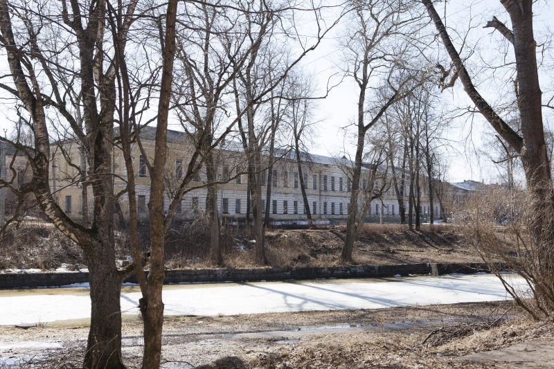
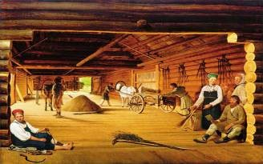
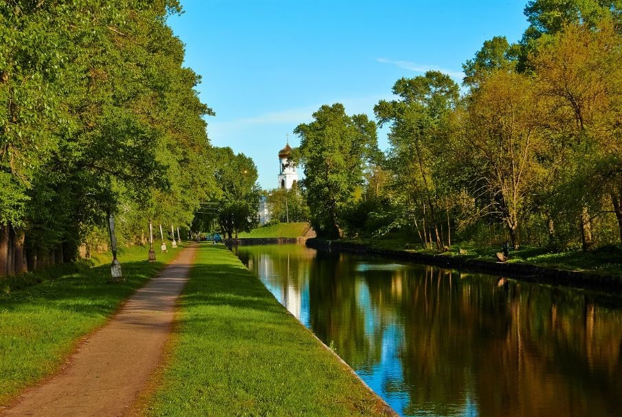

Волочек
Культура
1.Путевой дворец
Построен в 1779-1783 гг. на месте прежнего здания путевого дворца, которое было меньшего размера. Это произошло после утверждения Екатериной II регулярного плана застройки города. Сохранившийся путевой дворец — четвертый или пятый по счету в городе, это грандиозное по своим размерам здание, состоящее из главного корпуса и флигеля.

Предполагают, что архитектор - Ф.Ф.Штенгель. Главный двухэтажный корпус дворца сильно вытянут вдоль Цнинского канала. Он выстроен в стиле раннего классицизма. Фасад украшен рустовкой, характерной для многих казенных зданий того времени. Вместо второго, симметричного западного флигеля было построено здание банковской конторы. К 1827 году путевой дворец стал ветшать, в нем устроили казармы. Фасад здания переделали, избавив его от «старообразных украшений» по распоряжению Николая I. Известно, что около 1845 года его заняло правление III округа путей сообщения. К 1857 году здание перестроили, объединив флигель и главное здание, а в 1887 году здесь открыли училище кондукторов путей сообщения. В советское время здание отдали под школу.
2.Художник Алексей Венецианов

В 1818 году Венецианов покупает в Тверской области имение Сафонкова и становится помещиком. Здесь он очень много и плодотворно работал. Его картина «Гумно» была приобретена Александром I за три тысячи рублей. Деньги, полученные за картину, позволили Венецианову открыть художественную школу для талантливых крестьянских детей. Она стала известна как «Школа Венецианова».
3.Вышневолоцкая водная система Сердюкова Михаила Ивановича

В Вышнем Волочке огромное количество каналов, речек, островов, плотин и крупное водохранилище. Все водные артерии города обрамлены прекрасной природой Валдайской возвышенности. В этом месте между бассейнами реки Волги и балтийских рек самая «узкая» часть – всего около полутора километров. Это обстоятельство легло в основу создания Вышневолоцкой водной системы. Древний торговый путь «из варяг в греки», частью проходвший по этим древним землям, в 1703 году решено было усовершенствовать. Указом Петра Первого начато строительство первого канала между Цной и Тверцой. Государственной важности дело велось с большим небрежением, возглавлявший работы князь М. П. Гагарин позже был повешен: за «утрату доверия», т. е. попросту, за воровство. Несмотря на это, гидросистема была построена. Последующая эксплуатация выявила серьезные недостатки строителей. Для больших судов канал оказался мелок, особенно в сухое летнее время. «Дорога жизни», так остро необходимая для строительства Санкт-Петербурга оказалась под угрозой: снабжение продовольствием было нарушено, так что жителям пришлось даже голодать. За исправление ситуации взялся Михаил Иванович Сердюков. Человек необыкновенной судьбы. Родился он в Монголии, в совсем юном возрасте попал в плен и позже был продан русскому приказчику. Новый хозяин так привязался к смышленому мальчику, что дал ему свое имя при крещении и сделал своей правой рукой. После смерти крестного, как утверждают некоторые источники, сам Петр дал волю талантливому крепостному. В 25 лет Сердюков становится главным подрядчиком при строительстве Вышневолоцкой водной системы. Достоверно известно, что Сердюков лично встречался с государем. Зная, эта водная магистраль крайне необходима, Сердюков предложил не только свои инженерные расчеты, но и собственные средства. Уже через три года пропускная способность Вышневолоцкой системы была увеличена в два раза, а сооружение на реке Цне водохранилища позволило проходить по каналу крупным судам. Похоронен Сердюков в 1755 году на берегу своего детища – Вышневолоцкого водохранилища. Более 100 лет созданная им система работала исправно, до появления более крупной — Мариинской. С этого момента значение ее утрачивается и сейчас это не более чем городская достопримечательность. Не зря про Вышний Волочёк говорят: «Вышний Волочёк – Венеции клочок»! Повсюду каналы, небольшие островки, многочисленные мостики! Действительно «русская Венеция»!